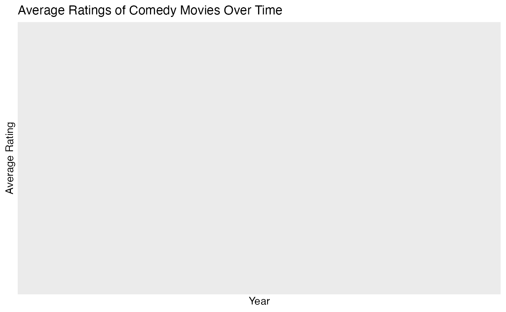
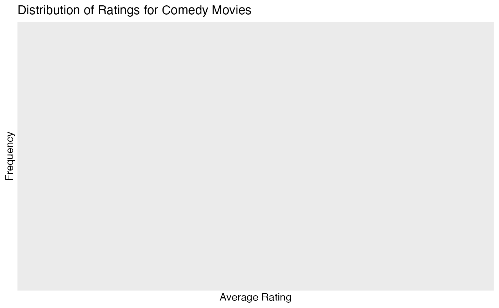
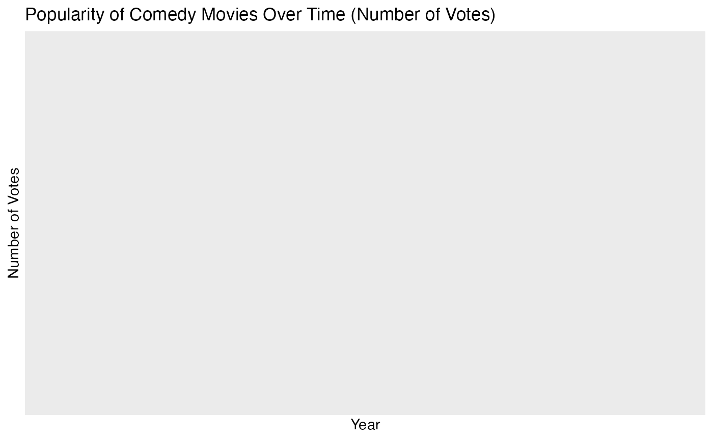

movie
movie.RmdLoading and Exploring the Data
The package provides two datasets: summer_movies and
summer_movie_genres.
# Loading datasets
data("summer_movies")
data("summer_movie_genres")
# Viewing the first few rows of each dataset
head(summer_movies)
#> # A tibble: 6 × 10
#> tconst title_type primary_title original_title year runtime_minutes genres
#> <chr> <chr> <chr> <chr> <dbl> <dbl> <chr>
#> 1 tt0011462 movie Midsummer Ma… Midsummer Mad… 1920 60 Drama
#> 2 tt0026714 movie A Midsummer … A Midsummer N… 1935 133 Comed…
#> 3 tt0033864 movie The Teachers… Magistrarna p… 1941 86 Comedy
#> 4 tt0037325 movie Summer Storm Summer Storm 1944 106 Crime…
#> 5 tt0038406 movie Centennial S… Centennial Su… 1946 102 Histo…
#> 6 tt0038738 tvMovie A Midsummer … A Midsummer N… 1946 150 Drama…
#> # ℹ 3 more variables: simple_title <chr>, average_rating <dbl>, num_votes <dbl>
head(summer_movie_genres)
#> # A tibble: 6 × 2
#> tconst genres
#> <chr> <chr>
#> 1 tt0011462 Drama
#> 2 tt0026714 Comedy
#> 3 tt0026714 Fantasy
#> 4 tt0026714 Romance
#> 5 tt0033864 Comedy
#> 6 tt0037325 CrimeVisualizing Movie Trends
Average Ratings Over Time
Let’s plot the average IMDb ratings of Comedy movies over time to analyze trends.
library(ggplot2)
library(dplyr)
#>
#> Attaching package: 'dplyr'
#> The following objects are masked from 'package:stats':
#>
#> filter, lag
#> The following objects are masked from 'package:base':
#>
#> intersect, setdiff, setequal, union
# Filter data for Comedy movies
comedy_movies <- summer_movies %>% filter(genres=="comedy")
# Plot average rating over time
ggplot(comedy_movies, aes(x = year, y = average_rating)) +
geom_line(color = "blue") +
geom_point() +
labs(title = "Average Ratings of Comedy Movies Over Time",
x = "Year", y = "Average Rating")
Distribution of Ratings for a Selected Genre
You can also explore the distribution of IMDb ratings for a specific genre. Here’s how to visualize the distribution of ratings for Comedy movies:
ggplot(comedy_movies, aes(x = average_rating)) +
geom_histogram(binwidth = 0.5, fill = "skyblue", color = "black") +
labs(title = "Distribution of Ratings for Comedy Movies",
x = "Average Rating", y = "Frequency")
Popularity (Number of Votes) Over Time
For a genre’s popularity, you can examine the number of votes a movie received over time.
ggplot(comedy_movies, aes(x = year, y = num_votes)) +
geom_line(color = "purple") +
geom_point() +
labs(title = "Popularity of Comedy Movies Over Time (Number of Votes)",
x = "Year", y = "Number of Votes")
Using the Shiny App for Interactive Exploration
The movie package includes an interactive Shiny app,
which provides a user-friendly interface to filter movies by genre, year
range, and rating.
App Layout
The Explore Summer-Themed Movies app has two main sections:
Sidebar Panel: This is where you apply filters to customize the data displayed in the graphs.
Main Panel: This section displays the graphs based on the filters selected in the Sidebar Panel.
Step-by-Step Guide to Using the App
1. Sidebar Panel
The Sidebar Panel provides filtering options to narrow down the movie data by genre, year range, and minimum rating.
-
Genre Dropdown: Select a specific genre (e.g., Comedy, Drama) or choose “All” to include movies from all genres.
How to Use: Select a genre from the dropdown to view only movies within that genre. Choosing “All” shows movies from every genre.
-
Year Range Slider: Filter movies by the release year. This slider defaults to the entire range of years in the dataset.
How to Use: Adjust the slider to set the start and end years. For example, setting it from 1990 to 2020 will show only movies released during that period.
-
Minimum Rating Slider: Set a minimum IMDb rating to filter for higher-rated movies.
How to Use: Move the slider to set a rating threshold. For instance, a minimum rating of 7 will display only movies rated 7 and above.
Download Button: Save the filtered dataset to your computer as a CSV file.
2. Main Panel
The Main Panel displays two visualizations based on the selected filters:
Distribution of Average Ratings: This histogram shows the distribution of IMDb ratings for movies matching your selected filters. Higher bars indicate more movies with a particular rating range.
Average Rating Over Time: This line plot shows the trend of average IMDb ratings over time for the selected genre and filters. It helps you observe rating trends and changes over the years.
Example Usage
To explore popular Comedy movies from 2000 onwards with high ratings:
Select Genre: Choose “Comedy”.
Year Range: Set the slider to start from 2000.
Minimum Rating: Set the rating slider to 7.
Download Data: Click “Download Filtered Data” to save this subset.
The graphs will update to show only highly rated Comedy movies from 2000 onwards.
Summary
The movie package provides powerful tools for exploring
and analyzing summer-themed movies. You can filter data by genre,
visualize trends over time, and use the Shiny app for interactive
exploration. This package is ideal for discovering insights about
summer-themed movies and understanding how different genres have evolved
over the years.
For more details, refer to the function documentation and the Shiny app for further exploration.